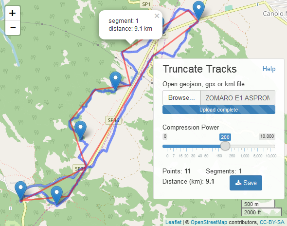

Compress Geo Tracks Live!
Smaller geospatial files are delivered faster on the Internet. Some GPS devices and mapping software generate large files with excessive number of points. That much accuracy is usually redundant and the application is reducing size by truncating the number of track points. Size reduction of over 90% is possible.
The application was built with R using the Leaflet library for mapping. Truncation (pruning) was implemented by the Douglas-Peucker algorithm. In-depth XML manipulations were performed thanks to the xml2 library.
File types supported for input and output files:
- gpx - generated by GPS-enabled devices
- kml - open file format by Google
- geojson - geographical elements with additional attributes in JSON
You can download sample files in above formats for testing.
Notes and Limitations
Pruning tracks with thousands of points takes time. An animated icon ( ) appears during processing. Downloading large files is also slow and the animated icon will show up on Save. Elevation data is supported along with latitude and longitude.
Additional elements from your file, like waypoints or shapes, may be shown along with the tracks. They are copied unchanged in the output file.
) appears during processing. Downloading large files is also slow and the animated icon will show up on Save. Elevation data is supported along with latitude and longitude.
Additional elements from your file, like waypoints or shapes, may be shown along with the tracks. They are copied unchanged in the output file.
Longer tracks have sometimes multiple segments of points. The number of points is shown before (=0) and after (>0) compression. Duplicate coordinate points are deleted. Mouse over a truncated(red) segment will highlight it, click will display its number and distance in kilometers.
gpx
Track points time (<trkpt> <time>) is supported/preserved. Track point names, if any, are not preserved. Leaflet shows route points (<rtept>) connected by lines, which could make the map appear congested.kml
Elements Polygon and LineRing are not supported. MultiGeometry tracks are supported.geoJson
LineString and MultiLineString tracks are supported, but not simultaneously in the same file.
Source code is not provided at this time.
Use it for free here
You can contact us with comments or to report any problems.
If you like the application, please

Â